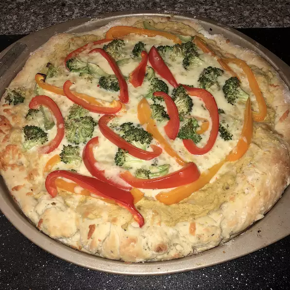

Hummus Pizza

This pizza uses hummus instead of the usual red sauce—a unique and healthy pizza for those bored with the traditional. Top with your favorite veggies and cheese
ingredients
- 1 (10 ounce) can refrigerated pizza crust dough
- 1 cup hummus spread
- 1/2 cups sliced bell peppers, any color
- 1 cup broccoli florets
- 2 cups shredded Monterey Jack cheese
directions
- Preheat the oven to 475 degrees C
- Roll out pizza crust and place on a pizza pan or baking sheet. Spread a thin layer of hummus over the crust. Arrange sliced peppers and broccoli over the hummus, and top with shredded cheese
- Bake in the preheated oven until the crust is golden brown and cheese is melted in the center, 10 to 15 minutes. Slice and serve.